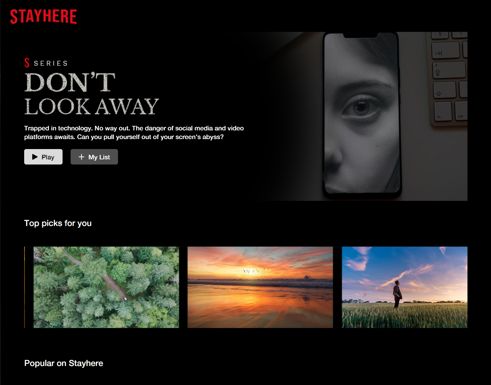
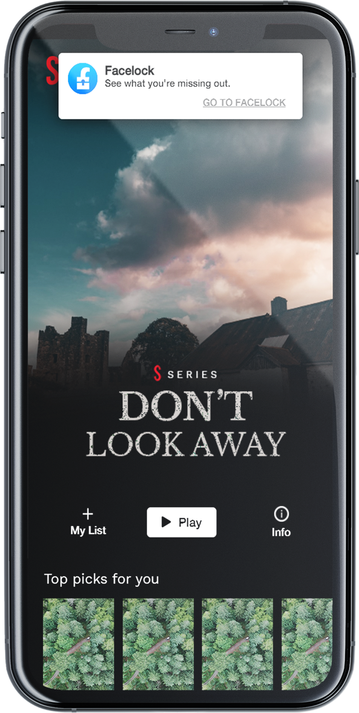

I designed this satirical website based on Netflix and Facebook to
expose the
addictive nature of social media and video platforms. By
interacting with the website's elements (e.g. hovering over certain
images or clicking on buttons), the user will realize the
negative health effects associated with excessive technology
consumption.

While the user navigates on Stayhere, a Facelock notification will
sporadically pop up on the screen, simulating
real-life notifications and intermittent schedules. If the
user clicks on the notification, it will take them to the Facelock
page.

On Facelock, the user scrolls down the page to view a variety of
posts, ranging from ads to memes to events. Each of them carries an
underlying message that exposes a downside of social media and video
platforms. Certain features trigger the brain’s dopamine,
giving the impression that social media is worth perusing. For
instance, the “Like” button appeals to users’ need for social
validation.